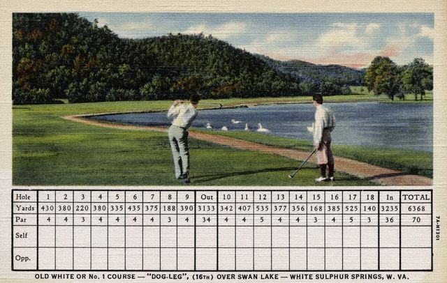

Nov. 18th - 21st White Sulphur
Springs, West Virginia --
Another gray, rainy day; an appropriate backdrop for the
landscape's transition from Kentucky's green rolling hills to West
Virginia's granite-topped mountains. At the border we pass the
biggest coal plant imaginable--it stretches down a gorge as far as the
eye can see, all twinkling lights and flame-spewing, steam-belching
pipes. We drive roads lined with broken-down trailers and shacks. One
is an improbable emporium with a sign hawking "coal
jewelry." Just the holiday gift for that naughty someone.
We were headed for The
Greenbrier: America's self-proclaimed first resort, ossified
Republican bastion and summer
home to five presidents from Van Buren through Buchanan. (The pre-Civil War Summer
White House was spitting distance from our humble
cottage.) A hotel has stood
on the site
since the 1780s. Continuity hiccuped when the government took it over
during WWII to inter German, Japanese and Italian diplomats. Then, need
dictated its conversion to an army hospital. In time,
much-the-worse-for-wear, the Greenbrier was sold back to its pre-war
owner, the Chesapeake and
Ohio Railroad. The drab old railroad company
set about turning it into the swellegant
joint it is today, hiring gifted-but-wacky decorator Dorothy Draper to
dip it in fuschia and puce. Don't let the
color palette fool you. It's a place of rules, rules and
more rules; of dress codes and genteel manners. One night, leaving
dinner, we walked behind a young guy who had been turned away from the
dining room for wearing a turtleneck under his sport coat. An elegantly
dressed older couple walked by him, and then us. As they were passing,
the woman in the couple was casting a glance back at the young ruffian.
I heard her hissing to her partner, "just look at that getup!"
We knew Rufus would be
happy here--he doesn't much worry about lifting a leg
in the wrong spot. But we weren't sure how the likes of us
would fare in a place like this. Still, this one was on our must-see
list--not for its exquisite
dining, fancy spa, or indoor
swimming
pool,
which rivals the Hearst mansion's Grecian ode to the sidestroke. Not
for its bowling alley, or dee-luxe movie theater. (Family fare
nightly!).
Not for its faux White House architecture
or its 1950's-on-acid decor.
We had come to see the bunker.
In the face of building tensions with the Soviets in the 1950s,
then-president Eisenhower's idealistic commitment to preserving
democracy took an unlikely turn. He approached his friends at The
Greenbrier about building a secret bunker to house both the House and
the Senate in case of nuclear attack. The resort was more than happy to
help out. Dubbed "Project Greek Island,"
the underground accommodations were tucked under new construction.
The place had often expanded over the years--none of the staff found
that odd. And in an area where jobs are
scarce, nobody questioned a project just because it called for pouring
reinforced concrete walls and ceilings
three to five-feet thick. A variety of contractors were rotated on and
off the
job to keep any one from getting too clear a picture of the whole; none
ever saw complete plans for what they were building.
Mosler, the safe company, was hired to build four enormous doors. For
all they knew, Fort Knox was getting a cousin.
From The Greenbrier's pamphlet on the bunker:
"The West
Entrance blast door weighs approximately
25 tons and is 12 feet wide,
10 feet high and 18 inches thick. The two
hinges are 4 feet long, 14 inches
wide and 8 inches thick. The six openings
above the blast doors are apertures
cut through five feet of concrete, covered by
a 16-inch steel plate which
could be closed during operating conditions."
As the bunker's construction drew to a close, the
government worked with the hotel to bring in some of the brightest,
most trustworthy local high school graduates to work in the resort's
electrical plant. These guys were watched very, very closely. The best
of the bunch were recruited by the government to staff the bunker. For
thirty-odd years (and they
must have
been very odd, indeed) they weren't to breathe a word about what they
did at work to anyone. And
they didn't. The bunker remained a secret until 1992,
when a freelance reporter on the trail of a rumor dug through every
record he could find, following bits and pieces all the way to the
Mosler Safe company, where he asked if the company
had built any doors for the government back in the 1950's. Turns out,
those doors blew
the story open. He interviewed anyone
who would talk about their recollections of the construction at the
Greenbrier in the 1950's. Plus, he had a "Deep Throat" in Congress,
who, it's probably safe to
say, opposed funding such a facility as the Cold War drew to a
close but didn't want to take the political hit for saying so. Much to
the chagrin of the folks at the Greenbrier who had
spent a lifetime lying to their loved ones for patriotic reasons,
Katherine Graham bought the story, floated it by the N.S.A. and
decided to expose this little nuclear nightmare lurking under formal
teas and society wedding parties.
Back at the resort, we, along with 30 other Cold War-curious, board a
bus to be
driven about an eighth of a mile to a door
resembling a
thousand others you've seen and would never give a second thought. Our
tour guide is Alan, a knowledgeable and deeply enthusiastic fellow who
is
still more than a little miffed that the bunker's beans got
spilled. We trundle off the bus and Alan demonstrates that this
little swinging door works just like all its
distant, nondescript cousins. That is, until a guy standing on the
other
side is cued to push open the whole metal wall housing it. The wall
hides
one of the Mosler doors described above, cleverly camouflaged, with
that little belly button of a normal-sized door playing the part of
trickster. Inside,
there's a long cylindrical tunnel, tall and wide enough to accommodate
a large bus or
truck. We're just at the beginning of exploring this optimistic
response to nuclear annihilation and already, I'm completely creeped
out.
We step inside.
"Is anyone claustrophobic?" Alan asks.
If so, no one cops to it. I'm wondering how claustrophobic he means and
if we're going to have
to climb through little hatches and tunnels, like the ones in Das Boot.
I keep it
zipped.
"Once we close that door, it's a long time before you're going to able
to leave," he continues. "We lose one or two people a week. Once
they're in they just need to get out. If you think that sounds like
you, it's a whole lot easier to leave now
than later."
We all soldier on. But for anyone who can remember the Cuban Missile
Crisis, this is a real,
grown-up equivalent of a haunted house. I'm wondering if he's telling
us about our freaked-out predecessors just to heighten the impact.
"I'm going to ask you to put your hands over your ears and keep them
there while we close the door," Alan says, and then carefully checks
to make sure we all do. He's serious. The guy who
opened the door is now pulling the wall of metal shut. 'How bad can it
be?' I wonder. Everyone is compliant, we all cup our palms
over our ears. As the gigantic door closes, a deep metal boom
accompanied by
a huge, concussive air wave gives us a start. I've never been near an
explosion of any
size but I'd wager being on the safe edge of one feels something like
this.
Sobered, we continue a little way down the hallway as Alan explains the
history and day-to-day readiness that the workers undertook during the
bunker's secret decades. He points to overhead pipes that were filled
with diesel fuel for the generators. Apparently diesel fuel grows algae
if it sits for more than a couple of weeks. And so, some lucky soul got
to drain and refill the pipes regularly. One side of the hall is
stacked to the ceiling
with boxes and boxes of packaged food. These, he explains, are no
longer waiting for a rounded-up congress, but are stand-ins for the
ones
that did. As in all things, shelf life matters. The
government would pull the just-about-to-expire meals to be served a
nearby army base.
"If you've heard that the food there is particularly bad, there's a
good reason," Alan says, smiling.
There were also freezers kept stocked with 100,000 pounds of meat. For
years, the need to recycle this bounty fueled The Greenbrier's
unusually
generous holiday meat give-away for all of its workers. (To their
credit, Alan says the resort kept the program up even after the bunker
was exposed, though the quantities gifted diminished a bit.)
We walk the twists and turns of the place: narrow hallways and metal
stairways that open to improbably huge open spaces. All-in-all, the
bunker is about the size of four football fields. Back in tiny land, we
find ourselves in an institutional looking tile room, with pipes and
nozzles to our sides, and overhead.
"This is the decontamination shower," Alan explains. Those who might
have wound up here
would have had their clothes taken away, they'd have been sent through
the showers and then issued this lovely little haute hell ensemble.
We are now picturing Tip O'Neill and Margaret Chase Smith in matching
cotton jammies and sneaks. The whole experience is disturbing enough
that even though this should be amusing, it isn't.
"And here's where we would have incinerated the clothes and other
trash," Alan says, leading us through catacombs, into a room where
iron oven doors dominate one facade. "They built it big enough to
handle a
person, if need be," he continues matter-of-factly.
Right.
Winding back up metal stairs we walk by an area walled off with an
open, but heavy metal grid. Alan motions to it. "The machine shop and
the jail, in
case anyone needed to be contained."
The imaginary mental snapshot now shifts to unruly, jammie-clad members
of congress in a cage. Not pretty.
Eisenhower had a bunch of time to consider this notion. A few
congressfolk were filled in on a "need-to-know" basis. But if
ever the others found out, it would have been under the worst of
circumstances, with a nuclear attack imminent or having just
occurred. The plan was to use armed members of the national guard to
lead them--at gunpoint if necessary--to waiting buses, trains or
planes. No family members allowed; no goodbyes. The only time the
bunker was actually about to serve was during the Cuban Missile
Crisis. Alan reports that before the standoff was defused, they were
one
hour away from rounding up the designated survivors for the trip to the
mountains of West Virginia.
Double ick.
We're led into a room where a huge, framed picture of the Capitol
Dome
is suspended from the ceiling on wires. Its sky is a brilliant, clear
blue and is intersected by a tree branch filled with the best of fall's
golden color. This would have served as a backdrop for broadcasts to
anyone able to
receive them. An alternate scene on the back featured the White House,
its borders a bounty of tulips in bloom. The seasonal references were a
curiosity. If a winter truly was to be nuclear, they would have added a
surreal touch. Though they do brighten up the bunker in a disturbing,
wasn't-our preholocaust-world-the-best? kind of way. The telephone
communication center looked antiquated by today's standards, though at
least someone had a sense of humor.
Pressing on, we hurry through one of the dorm
rooms, which is crammed full of brown metal bunks, each with
bedding
so tightly tucked that the proverbial quarter would have bounced
proudly. (Though under the circumstances its value would have been
considerably diminished.) Each bed had its own little locking drawer
underneath, the only truly private space anyone living there would have
had. One dorm room was held out for the few women who would have
resided in this nightmare of a place. But mostly, you imagined all
those aging men packed like sardines. If any significant number could
have managed sleep under these conditions, the cacophony of snoring
would have been stunning.
Another hallway led us past the medical wing, complete with an
operating room, a dentist's office and infirmary. (Considering what
would have brought everyone there, it didn't look big enough.) Bottles
of booze were kept under lock and key, though Uncle Sam thoughtfully
laid in a good supply on the theory that a period of nuclear
annihilation wasn't the best time for the alcohol addicted to try to
kick the sauce. Arguably, it would have been just the right time for
teetotalers to take up the habit.
Moving on, we explored two auditoriums--one with enough seats for
Congress, the other with just enough for the Senate. Amazing. Then, we
reach the part of the tour that is the most discombobulating. We walk
through a door into a giant exhibition hall where a medical jobs fair
is in full swing.
"This is the best part," Alan explains. "You're still in the facility.
So
are these people. Except you know you're in it, but they don't."
This was pretty darn clever. When they designed the bunker, they built
much of it in plain sight. There were blast doors hiding in the walls,
their joints just barely camouflaged by screamingly busy
wallpaper and folding screens. Guests at the Greenbrier had free
access to this area from the day the construction was finished, never
knowing what was on the other side of the wall, or that they'd entered
a room that would serve as offices for congress if the big one fell. A
broom closet with
some nasty old mops and brooms dissuaded anyone who wanted to see what
was behind one of the smaller doors inside the bunker. If they'd gone
beyond the mops and pails, they would have found it led the one of the
world's strangest wide closed-in spaces. And an electronics shop
protected another entrance. If the bunker was to be used, all it took
was clearing univited peole out and pulling the all the doors shut.
"The Soviets discovered all of our 'secret' bunkers," Alan explained.
"But they never knew about this place."
But didn't the folks working at the Greenbrier ever wonder what some of
those guys who actually worked at the bunker did with their days? Their
cover for their co-workers: they were TV repairmen. Sets in the late
50s and early 60s ran on a bevy of tubes that often needed replacing.
But didn't anyone notice that they weren't actually tinkering with TVs?
Well--they thought of that, too. So, part of their job was to sit in
guest
rooms with perfectly functional sets and watch them for a while. Their
co-workers would see them emerging from those rooms toting their tools.
If
anyone checked the "repaired" TV it always worked perfectly, and their
coworkers were up on Art Linkletter and Arthur Godfrey, to boot. Just
beyond the
TV repair shop was a mess hall, now
converted into a hall for
cooking demonstrations.
There were a bunch of other bits of subterfuge. Copies of the
Congressional Record were brought in weekly, so there would be a full
set if ever Congress set up housekeeping. These were smuggled
into the place with horse chow; the record tucked away in tack boxes--a
regular sight at a place with extensive stables. Pretty much everything
delivered to one of the world's costliest secret holes in the ground
was done in plain sight, but done in a way that no one would question.
The Greenbrier is reclaiming the bunker's space next year; tours will
cease in June or July, which is a shame. It's a window into a time we'd
do well not to forget. Visiting the bunker is just a jaw-dropping,
disturbing experience and one that's worth having. Staying at the hotel
as
a guest is pretty odd. It's expensive and the vibe is weird, even when
you don't factor in the government's little detention center. But we
both think touring the bunker is worth the effort, so you might want to
consider it. You might also want to read the article that
spilled the beans and a follow-up on government's role in planning
for the worst. For more pictures, take a peek at a site put
together by a fellow dedicated to documenting
the bunker.
STATS:
Miles traveled to date: 3500
Number of times we looked at each other in alarm while viewing bunker:
too many to count
Movies to get you in the mood: Dr.
Strangelove, On
the Beach, Fail
Safe
Snoozed at: The
Greenbrier (aboveground)
Next stop: DC, home of "The President," Eileen and Zayda